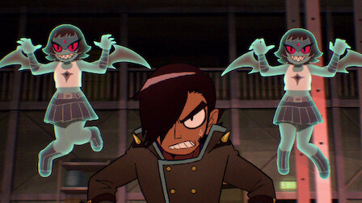
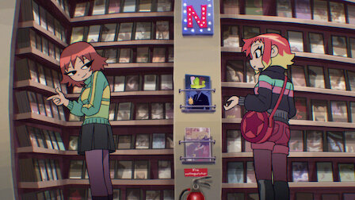
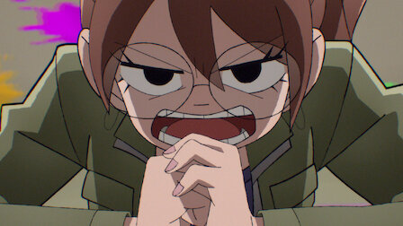
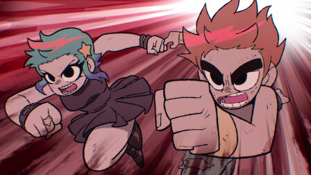

El vago de Scott Pilgrim lleva una vida tranquila. Hasta que conoce a la chica de cabello
arcoíris de sus sueños y saltan chispas (y cunde el caos).

2. La Liga
27 min
Una pandilla variopinta de caras conocidas se reúne en circunstancias anómalas. En otra parte, la Liga de los Malvados Ex se junta en su guarida secreta.

3. Ramona alquila una película
27 min
Un sueño empuja a Ramona a seguir una corazonada y confíar en Julie, muy dispuesta a escuchar. En el videoclub, un tenso encuentro con Roxie hace aflorar sentimientos.
4. Da igual
27 min
Ramona se acerca al set de rodaje para ver a Lucas, su ex estrella de cine, cuyo papel en una importante película llama la atención de los medios y de los paparazzi.
5. Luces. Cámara. ¿Flechazo?
26 min
Un documental sobre la producción de Toronto desvela el drama, y el tórrido romance, que se esconde tras las cámaras. Ramona acepta un trabajo temerario y exigente.

6. ¿QUIÉNLOHIZO?
28 min
Ramona se planta en casa de Julie con más preguntas. Un visitante sorpresa busca el perdón de Gideon. Knives aprovecha sus nuevos talentos.
7. Scott Pilgrim por partida doble
28 min
Asuntos pendientes, revelaciones alucinantes y un cóctel de amantes, amigos y ex. ¿Qué puede salir mal?

8. El mundo contra Scott Pilgrim
28 min
Scott, Ramona y sus amigos se enfrentan al mayor desafío que se les ha puesto delante: un enfrentamiento épico que podría cambiarlo todo.